| Video | Pose Estimation | Notation | Gloss | Text |
|---|---|---|---|---|
| 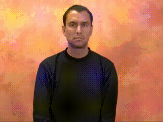 | 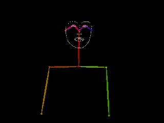 | HOUSE | House | |
| 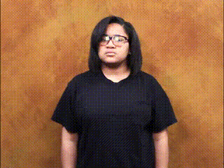 | 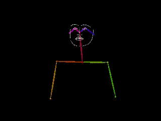 |  |
WRONG-WHAT | What’s the matter? What’s wrong? |
| 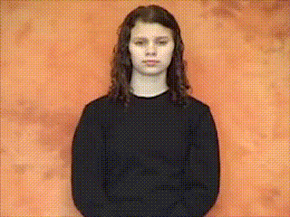 | 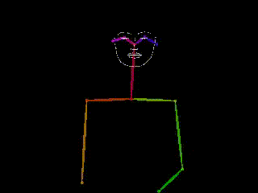 | DIFFERENT BUT |
Different But |
Sign languages (also known as signed languages) are languages that use the visual modality to convey meaning through manual articulations in combination with non-manual elements. Similar to spoken languages, sign languages are natural languages governed by a set of linguistic rules (Sandler and Lillo-Martin 2006), both emerging through an abstract, protracted aging process and evolved over time without meticulous planning. They are also distinct from spoken languages—i.e., American Sign Language (ASL) is not a visual form of English. Sign languages are not universal, and they are not mutually intelligible with each other, although there are also striking similarities among sign languages.
Sign Language Processing (Bragg et al. 2019) is an emerging field of artificial intelligence concerned with automatic processing and analysis of sign language content. It is a subfield of both natural language processing and computer vision. Challenges in sign language processing frequently involve machine translation of sign languages to spoken language text (sign language translation), from spoken language text (sign language production), or sign language recognition for sign language understanding.
One of the challenging aspects regarding translation of sign languages compared to spoken language, is that the translation process requires more interpretation, thus different interpreters would translate spoken or sign language differently. This is a major challenge in translation evaluation, where for example a sequence of signs could be interpreted into different sentences in spoken language, or vice versa. The challenge exacerbates where a sign does not have a spoken language translation, and thus translation might be impossible, or when trying to translate some content with subtext like humor and puns, it might be impossible to convey the content and subtext together.
The only widely accepted format for sign language data includes videos of the signing, and either a gloss or a spoken language text translation. Sign language videos may include a “depth” channel produced by a time-of-flight camera.
Sign languages have no formal written format. There are various universal notations systems—SignWriting (Sutton 1990), HamNoSys (Prillwitz and Zienert 1990)—and various language specific notations systems—Stokoe notation (Stokoe Jr 2005) and si5s for American Sign Language, SWL (Bergman 1977) for Swedish Sign Language, etc—but no writing system has been adopted widely enough, by the international Deaf community, that it could be considered the “written form” of a given sign language.
Additionally, sign language corpora may include human poses, either recorded with motion capture technologies, or estimated from videos using pose estimation techniques. Full body human poses include all the relevant information for sign language processing (manual or non-manual), except for visual cues such as props.
The following table exemplifies the various data formats. For this example we use SignWriting as the writing system. Note that the same sign might have two unrelated glosses, and the same gloss might have multiple valid texts.
| Video | Pose Estimation | Notation | Gloss | Text |
|---|---|---|---|---|
| 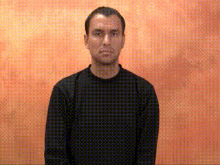 | 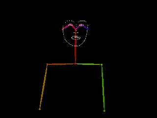 | HOUSE | House | |
| 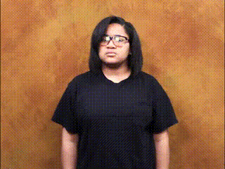 | 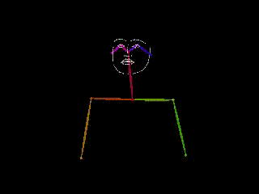 | |
WRONG-WHAT | What’s the matter? What’s wrong? |
| 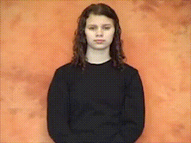 | 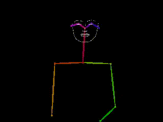 | DIFFERENT BUT |
Different But |
Sign language detection (Borg and Camilleri 2019; Moryossef et al. 2020) is defined as the binary-classification for any given frame of a video whether a person is using sign-language or not.
Borg and Camilleri (2019) introduced the classification of frames taken from YouTube videos as either signing or not. They take a spatial and temporal approach based on VGG-16 (Simonyan and Zisserman 2015) CNN to encode each frame and use a GRU (Cho et al. 2014) to encode the sequence of frames in a window of 20 frames at 5fps. In addition to the raw frame, they also either encode optical flow history, aggregated motion history, or frame difference.
Moryossef et al. (2020) improved upon their method by performing sign language detection in real-time. They identified that sign language use involves movement of the body, and as such, designed a model that works on top of human poses rather than directly on the video signal. They calculate the optical flow norm of every joint detected on the body, and apply a small yet effective contextualized model to predict for every frame whether the person is signing or not.
Sign language identification (Gebre, Wittenburg, and Heskes 2013; Monteiro et al. 2016) is defined as the classification between two or more sign languages.
Gebre, Wittenburg, and Heskes (2013) found that a simple random-forest classifier can distinguish between British Sign Language (BSL) and Greek Sign Language (ENN) with a 95% F1 score. This finding is further supported by Monteiro et al. (2016), which manages to differentiate between British Sign Language and French Sign Language (Langue des Signes Française, LSF) with 98% F1 score in videos with static backgrounds, and between American Sign Language and British Sign Language with 70% F1 score for videos mined from popular video sharing sites. The authors attribute their success mainly to the different fingerspelling systems, which is two-handed in the case of BSL and one-handed in the case of ASL and LSF.
Sign language translation is generally considered the task of translating between a video in sign language to spoken language text. Sign language production is the reverse process, of producing a sign language video from spoken language text. Sign language recognition is the task of recognizing the discrete signs themselves in sign language (glosses).
In the following graph, we can see a fully connected pentagon where each node is a single data representation, and each directed edge represents the task of converting between one data representation to another.
We split the graph into two:
Language Agnostic Tasks Language Specific Tasks
In total, there are 20 tasks conceptually defined by this graph, with varying amounts of previous research. Every path between two nodes might or might not be valid, depending on how lossy the tasks in the path are.
Video-to-Pose—commonly known as pose estimation—is the task to detect human figures in images and videos, so that one could determine, for example, where someone’s elbow shows up in an image. It was shown (Vogler and Goldenstein 2005) that the face pose correlates with facial non-manual features like head direction.
This area has been thoroughly researched (Pishchulin et al. 2012; Chen et al. 2017; Cao et al. 2019; Güler, Neverova, and Kokkinos 2018) with objectives varying from predicting 2D / 3D poses, to a selection of a small specific set of landmarks or a dense mesh of a person.
OpenPose (Cao et al. 2019; Simon et al. 2017; Cao et al. 2017; Wei et al. 2016) is the first multi-person system to jointly detect human body, hand, facial, and foot keypoints (in total 135 keypoints) in 2D on single images. While their model can estimate the full pose directly from an image in a single inference, they also suggest a pipeline approach where first they estimate the body pose, and then independently estimate the hands and face poses by acquiring higher resolution crops around those areas. With multiple angles of recording, OpenPose also offers keypoint triangulation in order to reconstruct the pose in 3D.
Güler, Neverova, and Kokkinos (2018) takes a different approach with DensePose. Instead of classifying for every keypoint which pixel is most likely, they suggest similarly to semantic segmentation, for each pixel to classify which body part it belongs to. Then, for each pixel, knowing the body part, they predict where that pixel is on the body part, relative to a 2D projection of a representative body model. This approach results in reconstruction of the full-body mesh, and allows sampling to find specific keypoints similar to OpenPose.
However, 2D human poses might not be sufficient to fully understand the position and orientation of landmarks in space, and applying pose estimation per-frame does not take the video temporal movement information into account, especially in cases of rapid movement which contain motion blur.
Pavllo et al. (2019) developed two methods to convert between 2D poses to 3D poses. The first, a supervised method, was trained to use the temporal information between frames to predict the missing Z-axis. The second, an unsupervised method, leveraging the fact that the 2D poses are merely a projection of an unknown 3D pose, and train a model to estimate the 3D pose and back-project to the input 2D poses. This back-projection is a deterministic process, and as such, it applies constraints on the 3D pose encoder. Zelinka and Kanis (2020) follows a similar process, and adds a constraint for bones to stay of a fixed length between frames.
Panteleris, Oikonomidis, and Argyros (2018) suggests converting the 2D poses to 3D using inverse kinematics (IK), a process taken from computer animation and robotics to calculate the variable joint parameters needed to place the end of a kinematic chain, such as a robot manipulator or animation character’s skeleton, in a given position and orientation relative to the start of the chain. Demonstrating their approach on hand pose estimation, they manually explicitly encode the constraints and limits of each joint, resulting in 26 degrees of freedom. Then, non-linear least-squares minimization fits a 3D model of the hand to the estimated 2D joint positions, recovering the 3D hand pose. This is similar to the back-projection used by Pavllo et al. (2019), except here no temporal information is being used.
MediaPipe Holistic (Grishchenko and Bazarevsky 2020) attempts to solve the 3D pose estimation problem directly by taking a similar approach to OpenPose, having a pipeline system to estimate the body, and then the face and hands. Unlike OpenPose, the estimated poses are in 3D, and the pose estimator runs in real-time on CPU, allowing for pose-based sign language models on low powered mobile devices. This pose estimation tool is widely available and built for Android, iOS, C++, Python, and the Web using Javascript.
Pose-to-Video, also known as motion-transfer or skeletal animation in the field of robotics and animation, is the conversion of a sequence of poses to a realistic-looking video. For sign language production, this is the final “rendering” to make the produced sign language look human.
Chan et al. (2019) demonstrates a semi-supervised approach where they take a set of videos, run pose-estimation with OpenPose (Cao et al. 2019), and learn an image-to-image translation (Isola et al. 2017) between the rendered skeleton and the original video. They demonstrate their approach on human dancing, where they can extract poses from a choreography, and render any person as if they were dancing that dance. They predict two consecutive frames for temporally coherent video results and introduce a separate pipeline for a more realistic face synthesis, although still flawed.
Wang et al. (2018) suggest a similar method using DensePose (Güler, Neverova, and Kokkinos 2018) representations in addition to the OpenPose (Cao et al. 2019) ones. They formalize a different model, with various objectives to optimize for such as background-foreground separation and temporal coherence by using the previous two timestamps in the input.
Using the same method by Chan et al. (2019) on “Everybody Dance Now”, Giró-i-Nieto (2020) asks, “Can Everybody Sign Now”? They evaluate the generated videos by asking signers various tasks after watching them, and comparing the signers’ ability to perform these tasks on the original videos, rendered pose videos, and reconstructed videos. They show that subjects prefer synthesized realistic videos over skeleton visualizations, and that out-of-the-box synthesis methods are not really effective enough, as subjects struggled to understand the reconstructed videos.
As a direct response, Saunders, Camgöz, and Bowden (2020) shows that like in Chan et al. (2019), where an adversarial loss is added to specifically generate the face, adding a similar loss to the hand generation process yields high resolution, more photo-realistic continuous sign language videos.
Deepfakes is a technique to replace a person in an existing image or video with someone else’s likeness (Nguyen et al. 2019). This technique can be used to improve the unrealistic face synthesis, resulting from not face-specialized models, or even replace cartoon faces from animated 3D models.
Pose-to-Gloss—also known as sign language recognition—is the task to recognize a sequence of signs from a sequence of poses.
TODO
Gloss-to-Pose—also known as sign language production—is the task to produce a sequence of poses that adequately represent a sequence of signs written as gloss.
To produce a sign language video, Stoll et al. (2018) constructs a lookup-table between glosses and sequences of 2D poses. They align all pose sequences at the neck joint of a reference skeleton, and group all sequences belonging to the same gloss. Then, for each group, they apply dynamic time warping and average out all sequences in the group to construct the mean pose sequence. This approach suffers from not having an accurate set of poses aligned to the gloss, and from unnatural motion transitions between glosses.
To alleviate the downsides of the previous work, Stoll et al. (2020) constructs a lookup-table of gloss to a group of sequences of poses rather than creating a mean pose sequence. They build a Motion Graph (Min and Chai 2012) - which is a Markov process that can be used to generate new motion sequences that are representative of real motion, and select the motion primitives (sequence of poses) per gloss with the highest transition probability. To smooth that sequence and reduce unnatural motion, they use Savitzky–Golay motion transition smoothing filter (Savitzky and Golay 1964).
Video-to-Gloss—also known as sign language recognition—is the task to recognize a sequence of signs from a video.
For this recognition, Cui, Liu, and Zhang (2017) constructs a three-step optimization model. First, they train a video-to-gloss end-to-end model, where they encode the video using a spatio-temporal CNN encoder, and predict the gloss using a Connectionist Temporal Classification (CTC) (Graves et al. 2006). Then, from the CTC alignment and category proposal, they encode each gloss-level segment independently, trained to predict the gloss category, and use this gloss video segments encoding to optimize the sequence learning model.
Cihan Camgöz et al. (2018) fundamentally differ from that approach and opt to formulate this problem as if it is a natural-language translation problem. They encode each video frame using AlexNet (Krizhevsky, Sutskever, and Hinton 2012), initialized using weights that were trained on ImageNet (Deng et al. 2009). Then they apply a GRU encoder-decoder architecture with Luong attention (Luong, Pham, and Manning 2015) to generate the gloss. In follow-up work, Cihan Camgöz et al. (2020) use a transformer encoder (Vaswani et al. 2017) to replace the GRU and use a CTC to decode the gloss. They show a slight improvement with this approach on the video-to-gloss task.
Gloss-to-Video—also known as sign language production—is the task to produce a video that adequately represent a sequence of signs written as gloss.
As of 2020, there is no research discussing the direct translation task between a gloss to video. We believe this is a result of the computational impracticality of the desired model, which led researchers to avoid performing this task directly, and instead rely on pipeline approaches using intermediate pose representations.
Gloss-to-Text—also known as sign language translation—is the natural language processing task of translating between gloss text representing sign-language signs and spoken language text. These texts commonly differ by terminology, capitalization, and sentence structure.
Cihan Camgöz et al. (2018) experimented with various machine-translation architectures and compared between using an LSTM vs. GRU for the recurrent model, as well as Luong attention (Luong, Pham, and Manning 2015) vs. Bahdanau attention (Bahdanau, Cho, and Bengio 2015), and various batch-sizes. They concluded that on the RWTH-PHOENIX-Weather-2014T dataset, which was also presented by this work, using GRUs, Luong attention, and a batch size of 1 outperforms all other configurations.
In parallel with the advancements in spoken language machine translation, Yin and Read (2020) proposed replacing the RNN with a Transformer (Vaswani et al. 2017) encoder-decoder model, showing improvements on both RWTH-PHOENIX-Weather-2014T (DGS) and ASLG-PC12 (ASL) datasets both using a single model, and ensemble of models. Interestingly, in gloss-to-text they show that using the sign language recognition (video-to-gloss) system output outperforms using the gold annotated glosses.
Building on the code published by Yin and Read (2020), (???) TODO show it is beneficial to pre-train these translation models using augmented monolingual spoken langaugea corpora. They try three different approaches for data augmentation: (1) Back-translation; (2) General text-to-gloss rules, including lemmatization, word reordering, and dropping of words; (3) Language pair specific rules, that augment the spoken language syntax to its corresponding sign language syntax. When pretraining, all augmentations show improvements over the baseline for both RWTH-PHOENIX-Weather-2014T (DGS) and NCSLGR (ASL).
Text-to-gloss—also knows as sign language translation—is the task to translate between a spoken language text and sign language gloss.
Zhao et al. (2000) used a Tree Adjoining Grammar (TAG) based system for translating between English sentences and American Sign Language glosses. They parse the English text, and simultaneously assemble an American Sign Language gloss tree, using Synchronous TAGs (Shieber and Schabes 1990; Shieber 1994), by associating the ASL elementary trees with the English elementary trees, and associating the nodes at which subsequent substitutions or adjunctions can take place. Synchronous TAGs have been used for machine translation between spoken languages (Abeillé, Schabes, and Joshi 1991) but this is the first application to a signed language.
For the automatic translation of gloss-to-text, Othman and Jemni (2012) identified the need for a large parallel sign language gloss and spoken language text corpus. They develop a part-of-speech based grammar to transform English sentences taken from the Gutenberg Project ebooks collection (Lebert 2008) into American Sign Language gloss. Their final corpus contains over 100 million sentences, and 800 million words, and is the largest English-ASL gloss corpus that we know of. Unfortunately, only a small sample of this corpus is available online.
Video-to-text—also knows as sign language translation—is the entire task of translating a raw video to spoken language text.
Cihan Camgöz et al. (2020) proposed a single architecture to perform this task, that can use both the sign language gloss and the spoken language text in joint-supervision. They use the pre-trained spatial embeddings from Koller et al. (2019) to encode each frame independently, and encode the frames with a transformer. On this encoding, they use a Connectionist Temporal Classification (CTC) (Graves et al. 2006) to classify the sign language gloss. Using the same encoding, they also use a transformer decoder to decode the spoken language text one token at a time. They show that adding gloss supervision improves the model over not using it, and that it outperforms previous video-to-gloss-to-text pipeline approaches (Cihan Camgöz et al. 2018).
Following up, Camgöz et al. (2020) propose a new architecture that does not require the supervision of glosses, called “Multi-channel Transformers for Multi-articulatory Sign Language Translation”. In this approach they crop the signing hand, the face, and perform 3D pose estimation to obtain three separate data channels. They encode each data channel separately using a transformer, then encode all channels together and concatenate the separate channels for each frame. Like their previous work, they use a transformer decoder to decode the spoken language text, but unlike their previous work, do not use the gloss as an additional supervision. Instead, they add two “anchoring” losses to predict the hand shape and mouth shape from each frame independently, as silver annotations are available to them using the model proposed in Koller et al. (2019). They conclude that this approach is on-par with previous approaches requiring glosses, and so they have broken the dependency upon costly annotated gloss information in the video-to-text task.
Text-to-Video—also known as sign language production—is the task to produce a video that adequately represent a spoken language text.
As of 2020, there is no research discussing the direct translation task between text to video. We believe this is a result of the computational impracticality of the desired model, which led researchers to avoid performing this task directly, and instead rely on pipeline approaches using intermediate pose representations.
Pose-to-text—also knows as sign language translation—is the task of translating a captured or estimated pose sequence to spoken language text.
Ko et al. (2019) demonstrate impressive performance on the pose-to-text task by inputting the pose sequence into a standard encoder-decoder translation network. They experiment both with GRU and various types of attention (Luong, Pham, and Manning 2015; Bahdanau, Cho, and Bengio 2015), and with a Transformer (Vaswani et al. 2017), and show similar performance, with the transformer underperforming on the validation set and overperforming on the test set which consists of unseen signers. They experiment with various normalization scheme, mainly, subtracting the mean and dividing by the standard deviation of every individual keypoint either with respect to the entire frame, or to the relevant “object” (Body, Face, and Hand).
TODO https://arxiv.org/abs/2004.14874 TODO https://arxiv.org/pdf/2011.09846.pdf
As of 2020, there is no research discussing the translation task between a writing notation system to any other modality.
As of 2020, there is no research discussing the translation task between any modality to a writing notation system.
Fingerspelling is the act of spelling a word letter-by-letter, borrowing from the spoken language alphabet (Battison 1978; Wilcox 1992; Brentari and Padden 2001). This phenomenon, found in most sign languages, often occurs when there is no previously agreed upon sign for a concept, like in technical language, colloquial conversations involving names, conversations involving current events, emphatic forms, and the context of code switching between the sign language and corresponding spoken language (Padden 1998; Montemurro and Brentari 2018). The relative amount of fingerspelling varies between sign languages, and for American Sign Language (ASL) accounts for 12–35% of the signed content (Padden and Gunsauls 2003).
Patrie and Johnson (2011) describe the following terminology to describe three different forms of fingerspelling:
ALL uses A and L, lexicalized BUZZ uses B and Z, etc…Fingerspelling recognition–a sub-task of sign language recognition–is the task to recognize fingerspelled words from a sign language video.
B. Shi et al. (2018) introduced a large dataset available for American Sign Language fingerspelling recognition. This dataset includes both the “careful”, and “rapid” forms of fingerspelling, collected from naturally occurring videos “in the wild” which are more challenging than studio scenario. They train a baseline model to take a sequence of images cropped around the signing hand, and either use an autoregressive decoder, or a CTC. They found that the CTC outperforms the autoregressive decoder model, but both achieve very low recognition rate (35-41% character level accuracy) compared to human performance (around 82%).
In a followup work, B. Shi et al. (2019) collected nearly an order-of-magnitude larger dataset, and designed a new recognition model. Instead of detecting the signing hand they detect the face, and crop a large area around it. Then, they perform an iterative process of zooming in to the hand using visual attention, in order to retain sufficient information in high resolution of the hand. Finally, like their previous work, they encode the image hand crops sequence, and use a CTC to obtain the frame labels. They show that this method outperforms their original “hand crop” method by 4%, and that using the additional data collected they can achieve up-to 62.3% character level accuracy. Looking through this dataset, we note that the videos in the dataset are taken from longer videos, and as they are cut, they do not retain the signing before the fingerspelling. This context relates to language modeling, where at first one fingerspells a word carefully, and when repeating it, might fingerspell it rapidly, but the interlocutors can infer they are fingerspelling the same word.
Fingerspelling production–a sub-task of sign language production–is the task to produce a fingerspelling video for words.
In its most basic form, “Careful” fingerspelling production can be trivially solved using pre-defined letter handshapes interpolation. Adeline (2013) demonstrates this approach for American Sign Language and English fingerspelling. They rig a hand armature for each letter in the English alphabet (N = 26) and generate all (N2 = 676) transitions between every two letters using interpolation or manual animation. Then, to fingerspell full words, they chain pairs of letter transitions. For example, for the word “CHLOE”, they would chain the following transitions sequentially: #C CH HL LO OE E#.
However, to produce life-like animations, one must also consider the rhythm and speed of holding letters, and transitioning between letters, as those can affect how intelligible fingerspelling motions are to an interlocutor (Wilcox (1992)). Wheatland et al. (2016) analyzes both “careful” and “rapid” fingerspelling videos for these features. They find that for both forms of fingerspelling, on average, the longer the word, the shorter the transition and hold time. Furthermore, they find that less time is spent on middle letters on average, and the last letter is held on average longer than the other letters in the word. Finally, they use this information to construct an animation system using letter pose interpolation and control the timing using a data-driven statistical model.
ELAN (Wittenburg et al. 2006) is an annotation tool for audio and video recordings. With ELAN a user can add an unlimited number of textual annotations to audio and/or video recordings. An annotation can be a sentence, word or gloss, a comment, translation or a description of any feature observed in the media. Annotations can be created on multiple layers, called tiers, which can be hierarchically interconnected. An annotation can either be time-aligned to the media, or it can refer to other existing annotations. The content of annotations consists of Unicode text and annotation documents are stored in an XML format (EAF). ELAN is open source (GPLv3), and installation is available for Windows, macOS, and Linux. PyMPI (Lubbers and Torreira 2013) allows for simple python interaction with Elan files.
iLex (Hanke 2002) is a tool for sign language lexicography and corpus analysis, that combines features found in empirical sign language lexicography and in sign language discourse transcription. It supports the user in integrated lexicon building while working on the transcription of a corpus and offers a number of unique features considered essential due to the specific nature of sign languages. iLex binaries are available for macOS.
SignStream (Neidle, Sclaroff, and Athitsos 2001) is a tool for linguistic annotations and computer vision research on visual-gestural language data SignStream installation is only available for old versions of MacOS, and is distributed under MIT license.
Anvil (Kipp 2001) is a free video annotation tool, offering multi-layered annotation based on a user-defined coding scheme. In Anvil, the annotator can see color-coded elements on multiple tracks in time-alignment. Some special features are cross-level links, non-temporal objects, timepoint tracks, coding agreement analysis, 3D viewing of motion capture data and a project tool for managing whole corpora of annotation files. Anvil installation is available for Windows, macOS, and Linux.
Currently, there is no easy way or agreed upon format to download and load sign language datasets, and as such, evaluation on these datasets is scarce. As part of this work, we streamlined loading of available datasets using Tensorflow Datasets (“TensorFlow Datasets, a Collection of Ready-to-Use Datasets,” n.d.). This allows researchers to load large and small datasets alike with a simple command, and be comparable to other works:
aslg_pc12 = tfds.load('aslg_pc12')
config = SignDatasetConfig(name="256x256:12", include_video=True, fps=12, resolution=(256, 256))
rwth_phoenix2014_t = tfds.load('rwth_phoenix2014_t', builder_kwargs=dict(config=config))Furthermore, we follow a unified interface for all datasets, making attributes the same, and comparable between datasets:
{
'id': tfds.features.Text(),
'signer': tfds.features.Text() | tf.int32,
'video': tfds.features.Video(shape=(None, HEIGHT, WIDTH, 3)),
'depth_video': tfds.features.Video(shape=(None, HEIGHT, WIDTH, 1)),
'fps': tf.int32,
'pose': {
'data': tfds.features.Tensor(shape=(None, 1, POINTS, CHANNELS), dtype=tf.float32),
'conf': tfds.features.Tensor(shape=(None, 1, POINTS), dtype=tf.float32)
},
'gloss': tfds.features.Text(),
'text': tfds.features.Text()
}The following table contains a curated list of datasets including various sign languages and data formats:
🎥 Video | 👋 Pose | 👄 Mouthing | ✍ Notation | 📋 Gloss | 📜 Text | 🔊 Speech
| Dataset | Publication | Language | Features | #Signs | #Samples | #Signers | License |
|---|---|---|---|---|---|---|---|
| ASL-100-RGBD | Hassan et al. (2020) | American | 🎥👋📋 | 100 | 4,150 Tokens | 22 | Authorized Academics |
| ASLG-PC12 💾 | Othman and Jemni (2012) | American | 📋📜 | > 100,000,000 Sentences | N/A | Sample Available | |
| ASLLVD | Athitsos et al. (2008) | American | TODO | 3,000 | 12,000 Samples | 4 | Attribution |
| ATIS | Bungeroth et al. (2008) | Multilingual | TODO | 292 | 595 Sentences | ||
| AUSLAN | Johnston (2010) | Australian | TODO | 1,100 Videos | 100 | ||
| AUTSL 💾 | Sincan and Keles (2020) | Turkish | 🎥📋 | 226 | 36,302 Samples | 43 | Codalab |
| BosphorusSign | Camgöz et al. (2016) | Turkish | TODO | 636 | 24,161 Samples | 6 | Not Published |
| BSL Corpus | Schembri et al. (2013) | British | TODO | 40,000 Lexical Items | 249 | Partially Restricted | |
| CDPSL | Łacheta and Rutkowski (2014) | Polish | 🎥✍📜 | 300 hours | |||
| ChicagoFSWild | B. Shi et al. (2018) | American | 🎥📜 | 26 | 7,304 Sequences | 160 | Public |
| ChicagoFSWild+ | B. Shi et al. (2019) | American | 🎥📜 | 26 | 55,232 Sequences | 260 | Public |
| CopyCat | Zafrulla et al. (2010) | American | TODO | 22 | 420 Phrases | 5 | |
| Corpus NGT 💾 | Crasborn and Zwitserlood (2008) | Netherlands | TODO | 15 Hours | 92 | CC BY 3.0 NL | |
| DEVISIGN | Chai, Wang, and Chen (2014) | Chinese | TODO | 2,000 | 24,000 Samples | 8 | Research purpose on request |
| Dicta-Sign | Matthes et al. (2012) | Multilingual | TODO | 6-8 Hours (/Participant) | 16-18 /Language | ||
| How2Sign | Duarte et al. (2020) | American | 🎥👋📋📜🔊 | 16,000 | 79 hours (35,000 sentences) | 11 | Not Published |
| K-RSL | Imashev et al. (2020) | Kazakh-Russian | 🎥👋📜 | 600 | 28,250 Videos | 10 | Attribution |
| KETI | Ko et al. (2019) | Korean | 🎥👋📋📜 | 524 | 14,672 Videos | 14 | TODO (emailed Sang-Ki Ko) |
| LSE-SIGN | Gutierrez-Sigut et al. (2016) | Spanish | TODO | 2,400 | 2,400 Samples | 2 | |
| MS-ASL | Joze and Koller (2018) | American | TODO | 1,000 | 25,000 (25 hours) | 200 | Public |
| NCSLGR 💾 | Databases (2007) | American | 🎥📋📜 | 1,875 sentences | 4 | TODO | |
| Public DGS Corpus | Hanke et al. (2020) | German | 🎥🎥👋👄✍📋📜📜 | 50 Hours | 330 | Custom | |
| RVL-SLLL ASL | Martínez et al. (2002) | American | TODO | 104 | 2,576 Videos | 14 | Research Attribution |
| RWTH Fingerspelling | Dreuw et al. (2006) | German | 🎥📜 | 35 | 1,400 single-char videos | 20 | |
| RWTH-BOSTON-104 | Dreuw et al. (2008) | American | 🎥📜 | 104 | 201 Sentences | 3 | |
| RWTH-PHOENIX-Weather T 💾 | Forster et al. (2014);Cihan Camgöz et al. (2018) | German | 🎥📋📜 | 1,231 | 8,257 Sentences | 9 | CC BY-NC-SA 3.0 |
| S-pot | Viitaniemi et al. (2014) | Finnish | TODO | 1,211 | 5,539 Videos | 5 | Permission |
| SIGNOR | Vintar, Jerko, and Kulovec (2012) | Slovene | 🎥👄✍📋📜 | 80 | TODO emailed Špela | ||
| SIGNUM | Von Agris and Kraiss (2007) | German | TODO | 450 | 15,600 Sequences | 20 | |
| SMILE | Ebling et al. (2018) | Swiss-German | TODO | 100 | 9,000 Samples | 30 | Not Published |
| SSL Corpus | Öqvist, Riemer Kankkonen, and Mesch (2020) | Swedish | 🎥✍📋📜 | TODO In January | |||
| SSL Lexicon | Mesch and Wallin (2012) | Swedish | 🎥📋📜📜 | 20,000 | CC BY-NC-SA 2.5 SE | ||
| Video-Based CSL | Huang et al. (2018) | Chinese | TODO | 178 | 25,000 Videos | 50 | Research Attribution |
| WLASL 💾 | Li et al. (2020) | American | 🎥📋 | 2,000 | 100 | C-UDA 1.0 |
Abeillé, Anne, Yves Schabes, and Aravind K Joshi. 1991. “Using Lexicalized Tags for Machine Translation.”
Adeline, Chloe. 2013. “Fingerspell.net.” http://fingerspell.net/.
Athitsos, Vassilis, Carol Neidle, Stan Sclaroff, Joan Nash, Alexandra Stefan, Quan Yuan, and Ashwin Thangali. 2008. “The American Sign Language Lexicon Video Dataset.” In 2008 Ieee Computer Society Conference on Computer Vision and Pattern Recognition Workshops, 1–8. IEEE.
Bahdanau, Dzmitry, Kyunghyun Cho, and Yoshua Bengio. 2015. “Neural Machine Translation by Jointly Learning to Align and Translate.” Edited by Yoshua Bengio and Yann LeCun. http://arxiv.org/abs/1409.0473.
Battison, Robbin. 1978. “Lexical Borrowing in American Sign Language.”
Bergman, Brita. 1977. Tecknad Svenska:[Signed Swedish]. LiberLäromedel/Utbildningsförl.:
Borg, Mark, and Kenneth P Camilleri. 2019. “Sign Language Detection "in the Wild" with Recurrent Neural Networks.” In ICASSP 2019-2019 Ieee International Conference on Acoustics, Speech and Signal Processing (Icassp), 1637–41. IEEE.
Bragg, Danielle, Oscar Koller, Mary Bellard, Larwan Berke, Patrick Boudreault, Annelies Braffort, Naomi Caselli, et al. 2019. “Sign Language Recognition, Generation, and Translation: An Interdisciplinary Perspective.” In The 21st International Acm Sigaccess Conference on Computers and Accessibility, 16–31.
Brentari, Diane, and Carol Padden. 2001. “A Language with Multiple Origins: Native and Foreign Vocabulary in American Sign Language.” Foreign Vocabulary in Sign Language: A Cross-Linguistic Investigation of Word Formation, 87–119.
B. Shi, A. Martinez Del Rio, J. Keane, D. Brentari, G. Shakhnarovich, and K. Livescu. 2019. “Fingerspelling Recognition in the Wild with Iterative Visual Attention.” ICCV.
B. Shi, A. Martinez Del Rio, J. Keane, J. Michaux, D. Brentari G. Shakhnarovich, and K. Livescu. 2018. “American Sign Language Fingerspelling Recognition in the Wild.” SLT.
Bungeroth, Jan, Daniel Stein, Philippe Dreuw, Hermann Ney, Sara Morrissey, Andy Way, and Lynette van Zijl. 2008. “The ATIS Sign Language Corpus.” In Proceedings of the Sixth International Conference on Language Resources and Evaluation (LREC’08). Marrakech, Morocco: European Language Resources Association (ELRA). http://www.lrec-conf.org/proceedings/lrec2008/pdf/748_paper.pdf.
Camgöz, Necati Cihan, Ahmet Alp Kındıroğ lu, Serpil Karabüklü, Meltem Kelepir, Ayş e Sumru Özsoy, and Lale Akarun. 2016. “BosphorusSign: A Turkish Sign Language Recognition Corpus in Health and Finance Domains.” In Proceedings of the Tenth International Conference on Language Resources and Evaluation (LREC’16), 1383–8. Portorož, Slovenia: European Language Resources Association (ELRA). https://www.aclweb.org/anthology/L16-1220.
Camgöz, Necati Cihan, Oscar Koller, Simon Hadfield, and Richard Bowden. 2020. “Multi-Channel Transformers for Multi-Articulatory Sign Language Translation.” arXiv Preprint arXiv:2009.00299.
Cao, Zhe, Tomas Simon, Shih-En Wei, and Yaser Sheikh. 2017. “Realtime Multi-Person 2D Pose Estimation Using Part Affinity Fields.” In CVPR.
Cao, Z., G. Hidalgo Martinez, T. Simon, S. Wei, and Y. A. Sheikh. 2019. “OpenPose: Realtime Multi-Person 2D Pose Estimation Using Part Affinity Fields.” IEEE Transactions on Pattern Analysis and Machine Intelligence.
Chai, Xiujuan, Hanjie Wang, and Xilin Chen. 2014. “The Devisign Large Vocabulary of Chinese Sign Language Database and Baseline Evaluations.” Technical Report VIPL-TR-14-SLR-001. Key Lab of Intelligent Information Processing of Chinese Academy of Sciences (CAS), Institute of Computing Technology, CAS.
Chan, Caroline, Shiry Ginosar, Tinghui Zhou, and Alexei A Efros. 2019. “Everybody Dance Now.” In Proceedings of the Ieee International Conference on Computer Vision, 5933–42.
Chen, Yu, Chunhua Shen, Xiu-Shen Wei, Lingqiao Liu, and Jian Yang. 2017. “Adversarial Posenet: A Structure-Aware Convolutional Network for Human Pose Estimation.” In Proceedings of the Ieee International Conference on Computer Vision, 1212–21.
Cho, Kyunghyun, Bart Van Merriënboer, Caglar Gulcehre, Dzmitry Bahdanau, Fethi Bougares, Holger Schwenk, and Yoshua Bengio. 2014. “Learning Phrase Representations Using Rnn Encoder-Decoder for Statistical Machine Translation.” arXiv Preprint arXiv:1406.1078.
Cihan Camgöz, Necati, Simon Hadfield, Oscar Koller, Hermann Ney, and Richard Bowden. 2018. “Neural Sign Language Translation.” In Proceedings of the Ieee Conference on Computer Vision and Pattern Recognition, 7784–93.
Cihan Camgöz, Necati, Oscar Koller, Simon Hadfield, and Richard Bowden. 2020. “Sign Language Transformers: Joint End-to-End Sign Language Recognition and Translation.” In Proceedings of the Ieee/Cvf Conference on Computer Vision and Pattern Recognition, 10023–33.
Crasborn, O., and I. Zwitserlood. 2008. “The Corpus Ngt: An Online Corpus for Professionals and Laymen.” In.
Cui, Runpeng, Hu Liu, and Changshui Zhang. 2017. “Recurrent Convolutional Neural Networks for Continuous Sign Language Recognition by Staged Optimization.” In Proceedings of the Ieee Conference on Computer Vision and Pattern Recognition, 7361–9.
Databases, NCSLGR. 2007. “Volumes 2–7.” American Sign Language Linguistic Research Project (Distributed on CD-ROM ….
Deng, Jia, Wei Dong, Richard Socher, Li-Jia Li, Kai Li, and Li Fei-Fei. 2009. “Imagenet: A Large-Scale Hierarchical Image Database.” In 2009 Ieee Conference on Computer Vision and Pattern Recognition, 248–55. Ieee.
Dreuw, Philippe, Thomas Deselaers, Daniel Keysers, and Hermann Ney. 2006. “Modeling Image Variability in Appearance-Based Gesture Recognition.” In ECCV Workshop on Statistical Methods in Multi-Image and Video Processing, 7–18.
Dreuw, Philippe, Carol Neidle, Vassilis Athitsos, Stan Sclaroff, and Hermann Ney. 2008. “Benchmark Databases for Video-Based Automatic Sign Language Recognition.” In LREC.
Duarte, Amanda, Shruti Palaskar, Deepti Ghadiyaram, Kenneth DeHaan, Florian Metze, Jordi Torres, and Xavier Giro-i-Nieto. 2020. “How2Sign: A Large-Scale Multimodal Dataset for Continuous American Sign Language.” arXiv Preprint arXiv:2008.08143.
Ebling, Sarah, Necati Cihan Camg ö z, Penny Boyes Braem, Katja Tissi, Sandra Sidler-Miserez, Stephanie Stoll, Simon Hadfield, et al. 2018. “SMILE Swiss German Sign Language Dataset.” In Proceedings of the Eleventh International Conference on Language Resources and Evaluation (LREC 2018). Miyazaki, Japan: European Language Resources Association (ELRA). https://www.aclweb.org/anthology/L18-1666.
Forster, Jens, Christoph Schmidt, Oscar Koller, Martin Bellgardt, and Hermann Ney. 2014. “Extensions of the Sign Language Recognition and Translation Corpus Rwth-Phoenix-Weather.” In LREC, 1911–6.
Gebre, Binyam Gebrekidan, Peter Wittenburg, and Tom Heskes. 2013. “Automatic Sign Language Identification.” In 2013 Ieee International Conference on Image Processing, 2626–30. IEEE.
Giró-i-Nieto, Xavier. 2020. “Can Everybody Sign Now? Exploring Sign Language Video Generation from 2D Poses.”
Graves, Alex, Santiago Fernández, Faustino Gomez, and Jürgen Schmidhuber. 2006. “Connectionist Temporal Classification: Labelling Unsegmented Sequence Data with Recurrent Neural Networks.” In Proceedings of the 23rd International Conference on Machine Learning, 369–76.
Grishchenko, Ivan, and Valentin Bazarevsky. 2020. “MediaPipe Holistic.” https://google.github.io/mediapipe/solutions/holistic.html.
Gutierrez-Sigut, Eva, Brendan Costello, Cristina Baus, and Manuel Carreiras. 2016. “LSE-Sign: A Lexical Database for Spanish Sign Language.” Behavior Research Methods 48 (1): 123–37.
Güler, Rıza Alp, Natalia Neverova, and Iasonas Kokkinos. 2018. “Densepose: Dense Human Pose Estimation in the Wild.” In Proceedings of the Ieee Conference on Computer Vision and Pattern Recognition, 7297–7306.
Hanke, Thomas. 2002. “ILex-a Tool for Sign Language Lexicography and Corpus Analysis.” In LREC.
Hanke, Thomas, Marc Schulder, Reiner Konrad, and Elena Jahn. 2020. “Extending the Public DGS Corpus in Size and Depth.” In Proceedings of the Lrec2020 9th Workshop on the Representation and Processing of Sign Languages: Sign Language Resources in the Service of the Language Community, Technological Challenges and Application Perspectives, 75–82. Marseille, France: European Language Resources Association (ELRA). https://www.aclweb.org/anthology/2020.signlang-1.12.
Hassan, Saad, Larwan Berke, Elahe Vahdani, Longlong Jing, Yingli Tian, and Matt Huenerfauth. 2020. “An Isolated-Signing RGBD Dataset of 100 American Sign Language Signs Produced by Fluent ASL Signers.” In Proceedings of the Lrec2020 9th Workshop on the Representation and Processing of Sign Languages: Sign Language Resources in the Service of the Language Community, Technological Challenges and Application Perspectives, 89–94. Marseille, France: European Language Resources Association (ELRA). https://www.aclweb.org/anthology/2020.signlang-1.14.
Huang, Jie, Wengang Zhou, Qilin Zhang, Houqiang Li, and Weiping Li. 2018. “Video-Based Sign Language Recognition Without Temporal Segmentation.” arXiv Preprint arXiv:1801.10111.
Imashev, Alfarabi, Medet Mukushev, Vadim Kimmelman, and Anara Sandygulova. 2020. “A Dataset for Linguistic Understanding, Visual Evaluation, and Recognition of Sign Languages: The K-Rsl.” In Proceedings of the 24th Conference on Computational Natural Language Learning, 631–40.
Isola, Phillip, Jun-Yan Zhu, Tinghui Zhou, and Alexei A Efros. 2017. “Image-to-Image Translation with Conditional Adversarial Networks.” In Proceedings of the Ieee Conference on Computer Vision and Pattern Recognition, 1125–34.
Johnston, Trevor. 2010. “From Archive to Corpus: Transcription and Annotation in the Creation of Signed Language Corpora.” International Journal of Corpus Linguistics 15 (1): 106–31.
Joze, Hamid Reza Vaezi, and Oscar Koller. 2018. “Ms-Asl: A Large-Scale Data Set and Benchmark for Understanding American Sign Language.” arXiv Preprint arXiv:1812.01053.
Kipp, Michael. 2001. “Anvil-a Generic Annotation Tool for Multimodal Dialogue.” In Seventh European Conference on Speech Communication and Technology.
Ko, Sang-Ki, Chang Jo Kim, Hyedong Jung, and Choongsang Cho. 2019. “Neural Sign Language Translation Based on Human Keypoint Estimation.” Applied Sciences 9 (13): 2683.
Koller, Oscar, Cihan Camgöz, Hermann Ney, and Richard Bowden. 2019. “Weakly Supervised Learning with Multi-Stream Cnn-Lstm-Hmms to Discover Sequential Parallelism in Sign Language Videos.” IEEE Transactions on Pattern Analysis and Machine Intelligence.
Krizhevsky, Alex, Ilya Sutskever, and Geoffrey E Hinton. 2012. “Imagenet Classification with Deep Convolutional Neural Networks.” In Advances in Neural Information Processing Systems, 1097–1105.
Lebert, Marie. 2008. “Project Gutenberg (1971-2008).” Project Gutenberg.
Li, Dongxu, Cristian Rodriguez, Xin Yu, and Hongdong Li. 2020. “Word-Level Deep Sign Language Recognition from Video: A New Large-Scale Dataset and Methods Comparison.” In The Ieee Winter Conference on Applications of Computer Vision, 1459–69.
Lubbers, Mart, and Francisco Torreira. 2013. “Pympi-Ling: A Python Module for Processing ELANs EAF and Praats TextGrid Annotation Files.” https://pypi.python.org/pypi/pympi-ling.
Luong, Minh-Thang, Hieu Pham, and Christopher D Manning. 2015. “Effective Approaches to Attention-Based Neural Machine Translation.” arXiv Preprint arXiv:1508.04025.
Martínez, Aleix M, Ronnie B Wilbur, Robin Shay, and Avinash C Kak. 2002. “Purdue Rvl-Slll Asl Database for Automatic Recognition of American Sign Language.” In Proceedings. Fourth Ieee International Conference on Multimodal Interfaces, 167–72. IEEE.
Matthes, Silke, Thomas Hanke, Anja Regen, Jakob Storz, Satu Worseck, Eleni Efthimiou, Athanasia-Lida Dimou, Annelies Braffort, John Glauert, and Eva Safar. 2012. “Dicta-Sign–Building a Multilingual Sign Language Corpus.” In Proceedings of the 5th Workshop on the Representation and Processing of Sign Languages: Interactions Between Corpus and Lexicon (Lrec 2012).
Mesch, Johanna, and Lars Wallin. 2012. “From Meaning to Signs and Back: Lexicography and the Swedish Sign Language Corpus.” In Proceedings of the 5th Workshop on the Representation and Processing of Sign Languages: Interactions Between Corpus and Lexicon [Language Resources and Evaluation Conference (Lrec)], 123–26.
Min, Jianyuan, and Jinxiang Chai. 2012. “Motion Graphs++ a Compact Generative Model for Semantic Motion Analysis and Synthesis.” ACM Transactions on Graphics (TOG) 31 (6): 1–12.
Monteiro, Caio DD, Christy Maria Mathew, Ricardo Gutierrez-Osuna, and Frank Shipman. 2016. “Detecting and Identifying Sign Languages Through Visual Features.” In 2016 Ieee International Symposium on Multimedia (Ism), 287–90. IEEE.
Montemurro, Kathryn, and Diane Brentari. 2018. “Emphatic Fingerspelling as Code-Mixing in American Sign Language.” Proceedings of the Linguistic Society of America 3 (1): 61–61.
Moryossef, Amit, Ioannis Tsochantaridis, Roee Yosef Aharoni, Sarah Ebling, and Srini Narayanan. 2020. “Real-Time Sign-Language Detection Using Human Pose Estimation.”
Neidle, Carol, Stan Sclaroff, and Vassilis Athitsos. 2001. “SignStream: A Tool for Linguistic and Computer Vision Research on Visual-Gestural Language Data.” Behavior Research Methods, Instruments, & Computers 33 (3): 311–20.
Nguyen, Thanh Thi, Cuong M Nguyen, Dung Tien Nguyen, Duc Thanh Nguyen, and Saeid Nahavandi. 2019. “Deep Learning for Deepfakes Creation and Detection.” arXiv Preprint arXiv:1909.11573 1.
Othman, Achraf, and Mohamed Jemni. 2012. “English-Asl Gloss Parallel Corpus 2012: Aslg-Pc12.” In 5th Workshop on the Representation and Processing of Sign Languages: Interactions Between Corpus and Lexicon Lrec.
Öqvist, Zrajm, Nikolaus Riemer Kankkonen, and Johanna Mesch. 2020. “STS-Korpus: A Sign Language Web Corpus Tool for Teaching and Public Use.” In Proceedings of the Lrec2020 9th Workshop on the Representation and Processing of Sign Languages: Sign Language Resources in the Service of the Language Community, Technological Challenges and Application Perspectives, 177–80. Marseille, France: European Language Resources Association (ELRA). https://www.aclweb.org/anthology/2020.signlang-1.29.
Padden, Carol A. 1998. “The Asl Lexicon.” Sign Language & Linguistics 1 (1): 39–60.
Padden, Carol A, and Darline Clark Gunsauls. 2003. “How the Alphabet Came to Be Used in a Sign Language.” Sign Language Studies, 10–33.
Panteleris, Paschalis, Iason Oikonomidis, and Antonis Argyros. 2018. “Using a Single Rgb Frame for Real Time 3d Hand Pose Estimation in the Wild.” In 2018 Ieee Winter Conference on Applications of Computer Vision (Wacv), 436–45. IEEE.
Patrie, Carol J, and Robert E Johnson. 2011. Fingerspelled Word Recognition Through Rapid Serial Visual Presentation: RSVP. DawnSignPress.
Pavllo, Dario, Christoph Feichtenhofer, David Grangier, and Michael Auli. 2019. “3d Human Pose Estimation in Video with Temporal Convolutions and Semi-Supervised Training.” In Proceedings of the Ieee Conference on Computer Vision and Pattern Recognition, 7753–62.
Pishchulin, Leonid, Arjun Jain, Mykhaylo Andriluka, Thorsten Thorm ä hlen, and Bernt Schiele. 2012. “Articulated People Detection and Pose Estimation: Reshaping the Future.” In 2012 Ieee Conference on Computer Vision and Pattern Recognition, 3178–85. IEEE.
Prillwitz, Siegmund, and Heiko Zienert. 1990. “Hamburg Notation System for Sign Language: Development of a Sign Writing with Computer Application.” In Current Trends in European Sign Language Research. Proceedings of the 3rd European Congress on Sign Language Research, 355–79.
Sandler, Wendy, and Diane Lillo-Martin. 2006. Sign Language and Linguistic Universals. Cambridge University Press.
Saunders, Ben, Necati Cihan Camgöz, and Richard Bowden. 2020. “Everybody Sign Now: Translating Spoken Language to Photo Realistic Sign Language Video.” arXiv Preprint arXiv:2011.09846.
Savitzky, Abraham, and Marcel JE Golay. 1964. “Smoothing and Differentiation of Data by Simplified Least Squares Procedures.” Analytical Chemistry 36 (8): 1627–39.
Schembri, Adam, Jordan Fenlon, Ramas Rentelis, Sally Reynolds, and Kearsy Cormier. 2013. “Building the British Sign Language Corpus.” Language Documentation & Conservation 7: 136–54.
Shieber, Stuart M. 1994. “RESTRICTING the Weak-Generative Capacity of Synchronous Tree-Adjoining Grammars.” Computational Intelligence 10 (4): 371–85.
Shieber, Stuart, and Yves Schabes. 1990. “Synchronous Tree-Adjoining Grammars.” In Proceedings of the 13th International Conference on Computational Linguistics. Association for Computational Linguistics.
Simon, Tomas, Hanbyul Joo, Iain Matthews, and Yaser Sheikh. 2017. “Hand Keypoint Detection in Single Images Using Multiview Bootstrapping.” In CVPR.
Simonyan, Karen, and Andrew Zisserman. 2015. “Very Deep Convolutional Networks for Large-Scale Image Recognition.” CoRR.
Sincan, Ozge Mercanoglu, and Hacer Yalim Keles. 2020. “AUTSL: A Large Scale Multi-Modal Turkish Sign Language Dataset and Baseline Methods.” IEEE Access 8: 181340–55.
Stokoe Jr, William C. 2005. “Sign Language Structure: An Outline of the Visual Communication Systems of the American Deaf.” Journal of Deaf Studies and Deaf Education 10 (1): 3–37.
Stoll, Stephanie, Necati Cihan Camgöz, Simon Hadfield, and Richard Bowden. 2018. “Sign Language Production Using Neural Machine Translation and Generative Adversarial Networks.” In Proceedings of the 29th British Machine Vision Conference (Bmvc 2018). British Machine Vision Association.
———. 2020. “Text2Sign: Towards Sign Language Production Using Neural Machine Translation and Generative Adversarial Networks.” International Journal of Computer Vision, 1–18.
Sutton, Valerie. 1990. Lessons in Sign Writing. SignWriting.
“TensorFlow Datasets, a Collection of Ready-to-Use Datasets.” n.d. https://www.tensorflow.org/datasets.
Vaswani, Ashish, Noam Shazeer, Niki Parmar, Jakob Uszkoreit, Llion Jones, Aidan N Gomez, Łukasz Kaiser, and Illia Polosukhin. 2017. “Attention Is All You Need.” In Advances in Neural Information Processing Systems, 5998–6008.
Viitaniemi, Ville, Tommi Jantunen, Leena Savolainen, Matti Karppa, and Jorma Laaksonen. 2014. “S-Pot - a Benchmark in Spotting Signs Within Continuous Signing.” In Proceedings of the Ninth International Conference on Language Resources and Evaluation (LREC’14), 1892–7. Reykjavik, Iceland: European Language Resources Association (ELRA). http://www.lrec-conf.org/proceedings/lrec2014/pdf/440_Paper.pdf.
Vintar, Špela, Boštjan Jerko, and Marjetka Kulovec. 2012. “Compiling the Slovene Sign Language Corpus.” In 5th Workshop on the Representation and Processing of Sign Languages: Interactions Between Corpus and Lexicon. Language Resources and Evaluation Conference (Lrec), 5:159–62.
Vogler, Christian, and Siome Goldenstein. 2005. “Analysis of Facial Expressions in American Sign Language.” In Proc, of the 3rd Int. Conf. On Universal Access in Human-Computer Interaction, Springer.
Von Agris, Ulrich, and Karl-Friedrich Kraiss. 2007. “Towards a Video Corpus for Signer-Independent Continuous Sign Language Recognition.” Gesture in Human-Computer Interaction and Simulation, Lisbon, Portugal, May 11.
Wang, Ting-Chun, Ming-Yu Liu, Jun-Yan Zhu, Guilin Liu, Andrew Tao, Jan Kautz, and Bryan Catanzaro. 2018. “Video-to-Video Synthesis.” In Advances in Neural Information Processing Systems (Neurips).
Wei, Shih-En, Varun Ramakrishna, Takeo Kanade, and Yaser Sheikh. 2016. “Convolutional Pose Machines.” In CVPR.
Wheatland, Nkenge, Ahsan Abdullah, Michael Neff, Sophie Jörg, and Victor Zordan. 2016. “Analysis in Support of Realistic Timing in Animated Fingerspelling.” In 2016 Ieee Virtual Reality (Vr), 309–10. IEEE.
Wilcox, Sherman. 1992. The Phonetics of Fingerspelling. Vol. 4. John Benjamins Publishing.
Wittenburg, Peter, Hennie Brugman, Albert Russel, Alex Klassmann, and Han Sloetjes. 2006. “ELAN: A Professional Framework for Multimodality Research.” In 5th International Conference on Language Resources and Evaluation (Lrec 2006), 1556–9.
Yin, Kayo, and Jesse Read. 2020. “Better Sign Language Translation with Stmc-Transformer.” In Proceedings of the 28th International Conference on Computational Linguistics, 5975–89.
Zafrulla, Zahoor, Helene Brashear, Harley Hamilton, and Thad Starner. 2010. “A Novel Approach to American Sign Language (ASL) Phrase Verification Using Reversed Signing.” In 2010 Ieee Computer Society Conference on Computer Vision and Pattern Recognition-Workshops, 48–55. IEEE.
Zelinka, Jan, and Jakub Kanis. 2020. “Neural Sign Language Synthesis: Words Are Our Glosses.” In The Ieee Winter Conference on Applications of Computer Vision, 3395–3403.
Zhao, Liwei, Karin Kipper, William Schuler, Christian Vogler, Norman Badler, and Martha Palmer. 2000. “A Machine Translation System from English to American Sign Language.” In Conference of the Association for Machine Translation in the Americas, 54–67. Springer.
Łacheta, Joanna, and Paweł Rutkowski. 2014. “A Corpus-Based Dictionary of Polish Sign Language (Pjm).” In.